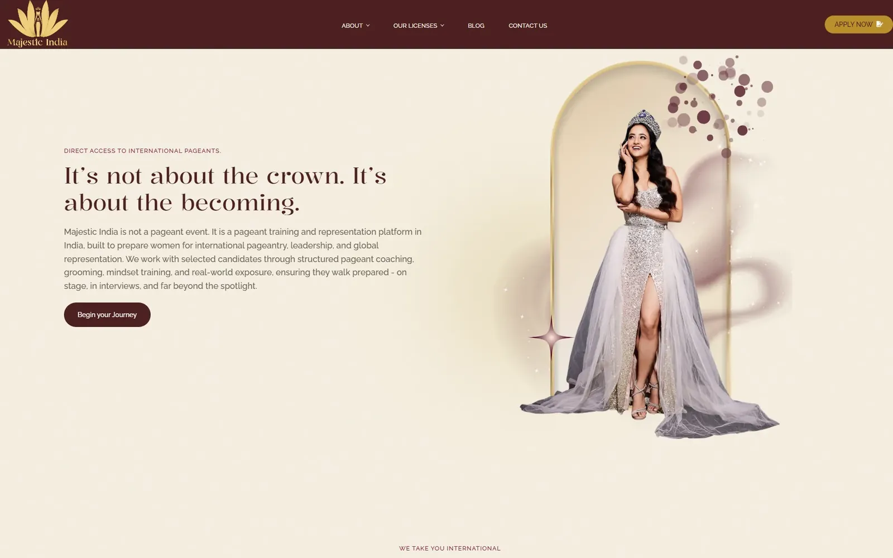

The Majestic India
A mobile-first WordPress website with a dedicated page for each of its four programmes and a clear Apply Now journey.
View live site (opens in a new tab)Details
Challenge
Visitors needed a clear route to each programme and an easy way to apply, especially on mobile.
Solution
I built a mobile-first WordPress site with Elementor, giving each programme its own page and connecting every page to the application journey.
Implementation
- Four dedicated programme pages
- An Apply Now journey linked from every programme page
- Mobile-first, responsive layouts
Results
Each of the four programmes has its own page, and every page leads to the same Apply Now journey.
Image gallery


Each of the four programmes has its own page, and every page leads to the same Apply Now journey.